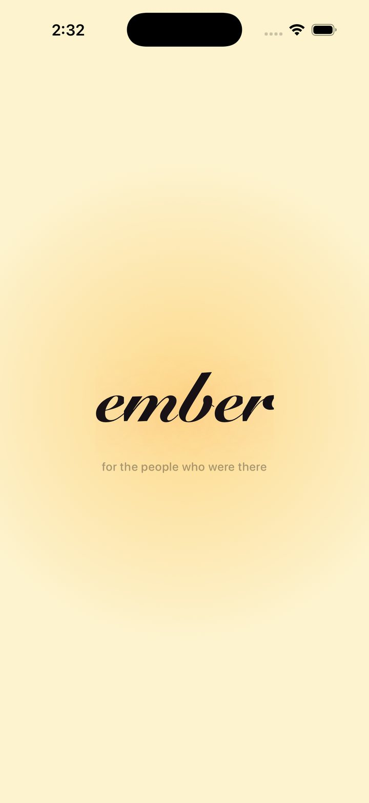
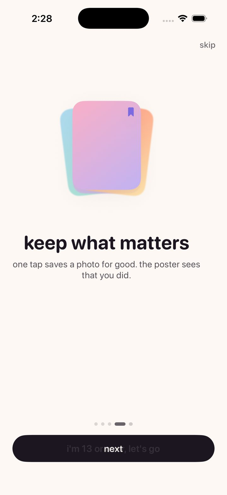
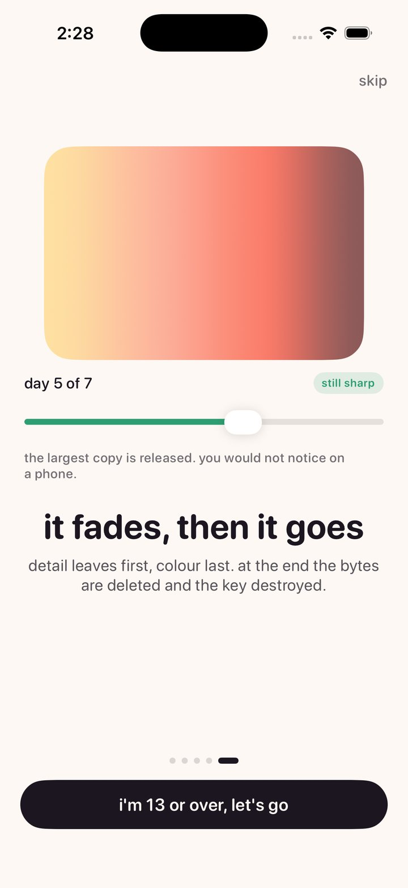
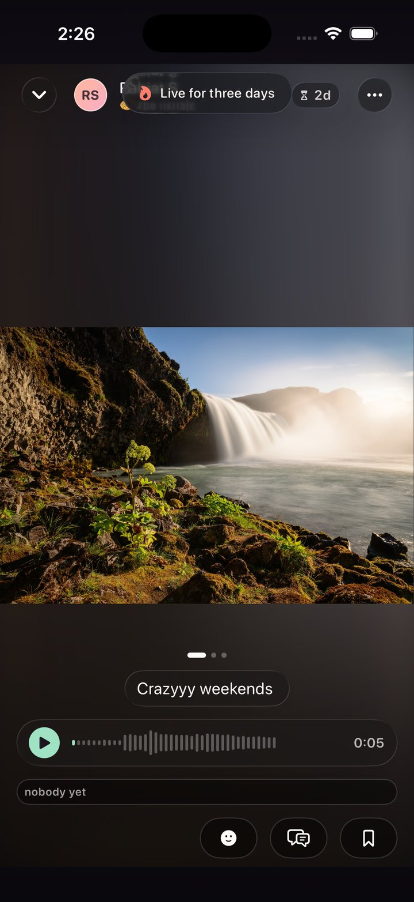
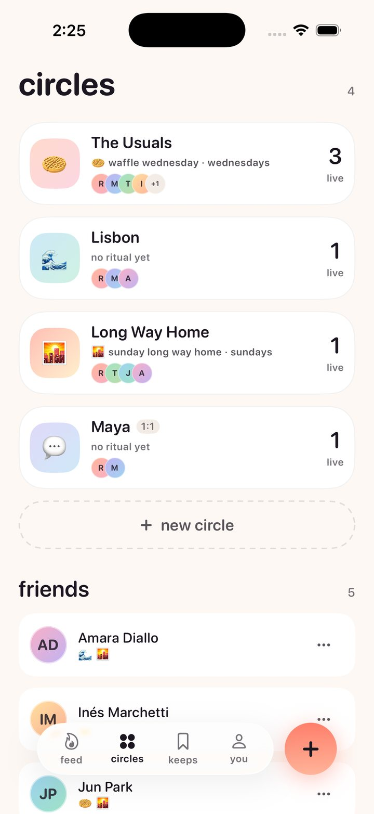
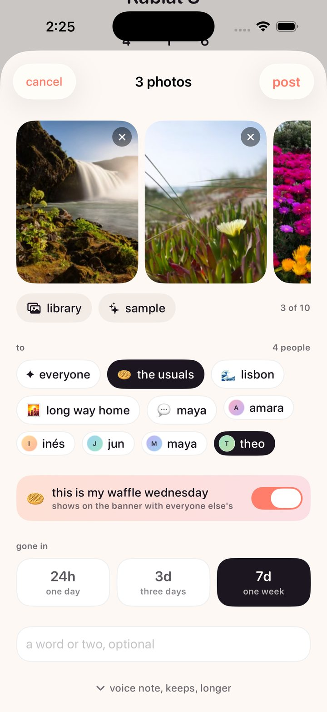
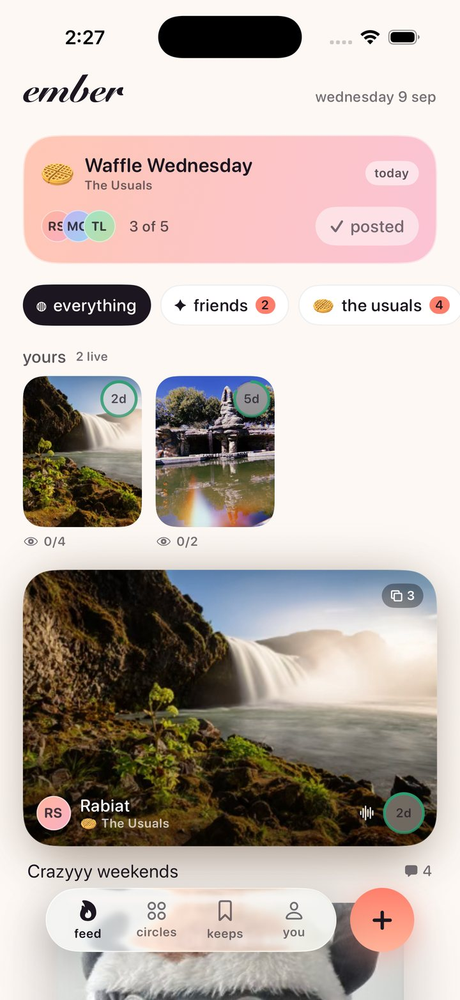
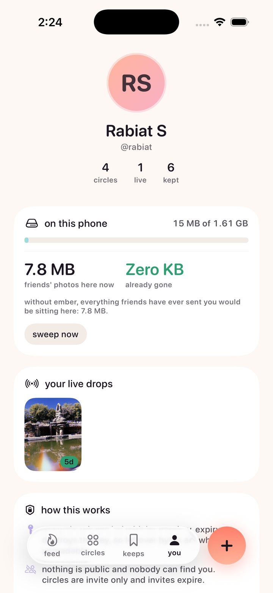

It starts with the name
Ember sits inside both of the words the product is made of.

remember · member
A closed group of members, sharing things they will remember precisely because the photos did not stay. And an ember is literally what the product is: warm, alive for a while, and then not.
Nothing in the naming had to be invented, which is usually the sign that a name is right. So the launch animation just shows you. The wordmark opens on remember in cursive, the re blurs and lifts away, then the m goes the same way, and you are left with ember as the mark dissolves into the feed. The whole thing is under two seconds, which is roughly a cold app launch anyway, so it costs the user nothing. It explains the name once, on first open, without a single line of onboarding copy.
The problem I actually wanted to solve
Your friends get back from a trip. They have two hundred photos and they want to share them with you and about nine other people.
So what happens now. They send the same set to each person, one at a time. And every one of those sends is a copy. The original is on their phone. The version they sent you is stored again in that thread. The version they sent the next person is stored again in that thread. Most people do not realise this, but the photos inside your messages are storage too, sitting on your device, counting against you.
Multiply that across a friend group and everyone quietly runs out of space, holding many copies of the same trip.
You still need to share with your friends. Social media is too public. So you are stuck choosing between the thing that eats your phone and the thing that tells everyone.
The alternative I wanted was closer to a physical gesture. You hand someone an album. They turn the pages and look at what they want to look at. They say something about the one they liked, either to you or to the whole room. And if there is one they really want, they take it.
That is the interaction model. Not a feed. Not a broadcast. Showing your friends a dump and letting them choose what to see, react to it, and talk about it, one on one or as a group.
Which is where the fade comes from
A photo does not sit at full quality for seven days and vanish at a cliff. It loses resolution across its week, and near the end it lifts away into drifting specks of light. Press and hold and you see it whole again, for as long as you hold. What is left at the very end is the thirty six bytes of colour it arrived as.
A hard cliff makes you check the clock. A slow fade makes you look now.



Circles set a standing day for themselves. Waffle Wednesday. Sunday Long Way Home. On its day the feed shows who has posted, and that is the entire nudge. There is no streak to protect, because obligation is what kills a group chat. The moment an app can punish you for not showing up, showing up stops meaning anything.
The design system
This was my first real UI project, and I built it the year I was finishing MHCI, so it is also the place where I got to find out what I actually think about design rather than what I could recite. Everything below is a decision with a reason attached. If the code and the reason ever disagree, the code is wrong.
The feeling I was aiming for is coming home. Not a product, a room. You are flipping through an album with people who were there, and when one of them is good you say so, and if one of them matters you keep it. Warmth is not decoration here, it is the brief.
Five principles the whole thing hangs off
- The photograph is the interface. Chrome sits on top of images inside glass, never stacked above and below them. Where a shape can carry meaning it does: the countdown is a ring, the frame count is a stacked edge, a reaction is the sticker itself.
- Say it once, in as few words as possible. All interface copy is lowercase, under six words, and appears once. Recognition is faster than reading, and a small closed group does not need instructing, because a friend handed them the app.
- Time is a colour before it is a number. Mint means days, butter means the last fifth, coral means hours. The numeral is still there for anyone who wants it.
- Warm, not neutral. The background is #FDF8F4, not white. Ink is #1B1620, not black.
- The promise is visible. Storage, expiry and deletion are not settings screens. A claim you can watch working beats a paragraph in a privacy policy.
Information hierarchy: the drop card
The single most important layout in the app, and the one I would put in front of a design review first.
A typical photo-feed row spends about 90pt on metadata stacked above and below the image. Ember spends about 34pt, placed on the photo itself, behind glass. That difference is not a detail. It is the difference between seeing one card on screen and seeing two.
Everything on that card is ranked. The photograph is the content, so it keeps its own aspect ratio, clamped between 0.8 and 1.9 and capped at 380pt tall. The things you need at a glance, who posted and how long is left, sit on a glass bar over the bottom of the image. The caption is capped at two lines and truncates on purpose, because the card must not grow unbounded to accommodate someone who wrote an essay. Reactions and comment count sit outside the frame, below, because they are about the photo rather than part of it.
Hierarchy is mostly deciding what is allowed to push everything else down the screen.
White space, and having very few legal values
Spacing runs on a 4pt base with a deliberately short scale: 4, 8, 12, 16, 24, 32, and a screen margin of 20 that never changes on any screen, ever. Nothing is edge to edge except a photograph in the viewer.
Seven values is the entire vocabulary, and the shortness is the point. Most of what makes an interface feel untidy is one-off padding, someone nudging a thing four points to make one screen look right. You cannot write a one-off padding if the only values in scope are these seven. Constraint does the tidying so discipline does not have to.
Corners are continuous rather than the default circular, at four sizes: 12 for chips, 18 for controls, 28 for cards, 36 for sheets. Card radius is large deliberately. A big soft rectangle reads as a photographic object rather than a UI panel, and that is most of why the feed feels like a stack of prints instead of a list of posts.
A palette in two halves
This is the decision I would defend hardest, because it is what stops a pastel interface from becoming unusable. The palette is split, and the halves have different jobs and different rules.
Hue is the pastel half, used only for fills: backgrounds, gradients, avatar ramps, banner washes. Large, low contrast, decorative, chosen purely for how they sit underneath a photograph. They carry no meaning, so they carry no contrast obligation. Every one is desaturated enough to sit under an image without competing with it.
Signal is the deeper half, used only for meaning: the countdown ring, urgency, the kept state. Every one is held to a 3:1 contrast minimum, because if you cannot tell mint from coral then you cannot tell four days from four hours.
The example that made the rule concrete: pastel mint measures 1.40:1. As a background wash that is completely fine. As the colour telling you how long a memory has left, it is unusable. So the halves are separated in code, and nothing in the app may use a colour that is not a token.
The ground is warm for a reason too. Pure neutrals next to peach read as holes punched in the page, and warm off-whites flatter skin tones, which is most of what gets photographed here.
One typeface, and no custom font
The reflexive move for a consumer app is to licence a display face. I decided against it, and the reasoning is a good example of the system arguing with itself.
- Weight. A usable custom family runs 200 to 400 KB across its weights. On an app whose entire pitch is not hoarding bytes, that is an awkward first impression.
- Dynamic Type. iOS reflows the system faces correctly across the full accessibility range, in every script. Custom faces need per-size optical work that almost never gets done, and it breaks first at the largest sizes, which is exactly where it matters most.
- Coverage. SF ships every script the app could need. A boutique face ships Latin.
- It is not where the brand lives. Ember is recognisable from the cursive mark, the pastel-on-paper palette, the countdown ring and the way it moves. None of that depends on the body face, so none of it breaks when Apple ships a new SF revision.
So: SF Pro Rounded everywhere, with Snell Roundhand reserved for the wordmark. Rounded specifically, because softened terminals read as friendly without reading as childish, and they sit correctly beside a cursive letterform that is also soft-terminalled.
Eight size tokens, all on Font.system so they scale automatically. I wrote down
where it breaks under stress rather than pretending it does not: tab bar labels crowd first
and should drop to symbols above AX2, and the expiry ring drops its numeral at accessibility
sizes and lets the ring carry the meaning alone, with the full sentence still read aloud by
VoiceOver.
Icons, and shapes instead of icons
SF Symbols, for the same reason as the type: they are on every device, they align optically to the text baseline for free, they inherit weight from the surrounding font, and they are what an iOS user already knows. A custom set would cost drawing time, add weight, and be less legible on day one.
The set is small, and every symbol earns its place by appearing in more than one context or by having no shape alternative. Where a shape is a better answer than a symbol, the shape wins: the countdown is a ring, not a clock glyph, and the frame count is a stacked edge on the card, not a number in a badge.
Voice
Lowercase, short, and never explaining itself. This is the part people skip and it is half of how an interface feels.
| Ember says | Not |
|---|---|
| gone in | Select an expiration duration |
| add yours | Participate in today's prompt |
| nothing burning | You have no active posts |
| say something before it goes | Be the first to comment! |
| kept. maya will see. | Photo saved to your library |
Motion has one rule
Motion explains where something came from, or it does not happen.
A sheet rises from the button that opened it. A sticker scales up from the point you tapped. A card fades and lifts three percent on first appearance so a feed assembles rather than snapping. Nothing spins, bounces or slides purely to be noticed.
Everything is one of two families, which is why transitions across the app feel related. Settle is springs, for anything a finger caused, tuned so the element arrives just after the finger leaves. That small lag is what makes an interface feel physical instead of laggy. Reveal is eased curves, for anything the app did on its own. Exactly one curve overshoots, reserved for stickers and reactions, where a bit of bounce is the entire emotional payload. Using it anywhere else would spend the effect.



Accessibility is in the system, not bolted on
Anything interactive is at least 44 by 44 points regardless of how small the glyph inside it looks. Dynamic Type is supported across the full accessibility range, which is most of why there is no custom font. Meaningful colour is held to a contrast floor while decorative colour is not, which is the whole reason the palette is split. And anywhere colour carries state, a number or a spoken sentence carries it too, so the ring is never the only way to know how long you have.
The backend, and why I pushed on it so hard
I want to be accurate about this rather than modest about it. The design and the architecture were equally important, and they took roughly equal amounts of care. But I was deliberate about wanting the backend to be as strong as I could make it, because photos are finicky and the failure modes are all miserable.
You do not want to lose someone's image. You do not want it stored in the wrong place. You do not want a permission check that quietly lets the wrong person see something, or one that locks a member out of their own circle. And unusually for a photo app, this one is supposed to destroy things on a schedule, which means a bug in the wrong direction deletes something early and a bug in the other direction breaks the entire promise.
The whole product is a technical claim. "It goes away" is not something you can express in a layout. If deletion is soft, or recoverable, or depends on my application code being correct, then the app is lying and the interface is decoration on top of a lie. So the architecture had to be true first, and then the design had somewhere honest to stand.
What "its own key" means, in plain words
Encryption words get thrown around, so here is what is actually happening.
Every drop gets its own private key, generated on the phone, used for nothing else. The photo is locked with that key before it ever leaves the device, using AES-256-GCM, which is the standard lock that also tells you if someone tampered with the box. So what travels to the server is a sealed box, and the server never receives the key that opens it.
Then the key has to reach the right people and nobody else. Each member of the circle has their own public and private key pair. The drop's key is put in a small envelope addressed to each member individually, locked with their public key, using X25519. Six people in the circle means six envelopes. Each person can open exactly their own envelope, get the drop key, and unlock the photo. Anyone else holds an envelope they cannot open, and the server holds a box it cannot open.
Which is what makes the expiry real. Destroying the drop key is not a flag in a database saying "deleted." It removes the only thing that could ever turn those bytes back into a picture. Whatever survives, wherever it survived, is noise.
There is a test for exactly that, and it is the most important test in the project: seal a photo, store it, read it back successfully, shred the key, read again. Nothing comes out. That test is the product.
None of that is hidden from the user either. The app ships with a fine print screen that explains what happens to your photos, who can see you, and what is kept, in the same plain language as above. Being able to read the actual promise from inside the app, rather than finding it in a policy document nobody opens, is the point. Transparency is a feature here, not a compliance step.
The storage thesis
Ephemerality is usually framed as a privacy feature. It is also an economics feature, and that is the half that makes the app possible for one person to run.
A photo app that keeps everything forever has a cost curve that only goes up, which is why every one of them eventually sells you storage or sells your attention. If content expires by design, storage cost stops compounding. Running this for a friend group today costs the ninety nine dollar developer program fee and nothing else, because the free database tier is genuinely enough when nothing accumulates.
On top of that, every photo becomes three renditions and the app is careful about which one it asks for.
| Rendition | Long edge | Fetched when |
|---|---|---|
| thumb | 400px | Every card, always cached |
| display | 2048px | A photo goes full screen |
| original | Untouched | A pinch to zoom, or a keep |
Six friends browsing a ten photo drop move about 1.5 MB, not 50 MB, and still get the untouched file the instant somebody actually wants it. Quality is never lost, only deferred. And as a drop ages the larger renditions are deleted first, so most of its storage is released long before the drop itself is.
Which brings it back to where this started. One copy, shared with the people you chose, that cleans up after itself. Instead of ten copies in ten threads that never do.

Both platforms, one promise
iPhone is SwiftUI. Android is Expo, built in the cloud with EAS. Same server, same crypto: a drop sealed on an iPhone opens on Android, and that is proven by a parity test running against a vector the Swift tests emit, rather than by me assuming two implementations of the same spec agree.
The app boots into a seeded world with four circles, a live Waffle Wednesday, and a drop in its final hours, so the states that are hard to reach are always one launch away. Without a server configured it runs entirely on device, and the profile screen tells you which mode you are in.
Tests cover the media pipeline, sealing, key wrapping, shredding, the decay ladder and the models, plus UI tests for the flows that break silently. There is also a suite that runs the real client against the real project, which is how a client and a schema that quietly disagree get caught. It found four real bugs the first time it ran.
What I would do next
- Run it with an actual circle of friends for a month. Everything above is a design argument until a group of people either keeps opening it or does not.
- Watch whether the fade reads as intended or as a bug. Losing detail on purpose is the riskiest idea in the product and the one most likely to be misread.
- Work out whether keeps stay rare. If everyone keeps everything, the app quietly becomes the archive I was trying not to build.